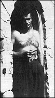
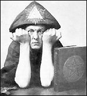
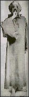

CHAPTER
SIX
His Magickal Career
The late Aleister Crowley, my very good
friend ...
L. RON HUBBARD, Conditions
of Space/Time/Energy, 1952,
Philadelphia Doctorate Course lecture 18
 Hubbard met Jack Parsons (right)
while on convalescent leave in Los Angeles, in August 1945. When Hubbard's terminal leave
from the Navy began on December 6, 1945, he went straight to Parsons' Pasadena home. Jack
Parsons was a science fiction fan, a rocket and explosives chemist, and a practitioner of
ritual "magick." Hubbard and Parsons quickly formed a powerful bond, and over
the following months engaged in variations on Aleister Crowley's "magick."
Later, Hubbard was eager to make light of this involvement. After all, the world famous
explorer, nuclear physicist, war hero and philosopher could not be known to have engaged
in demonic sexual rites.
In 1969, the London Sunday Times exposed
Hubbard's magickal connections. The Scientologists threatened legal action, and the Sunday
Times, unsure of its legal position, paid a small out-of-court settlement. Without
retracting their earlier article, they printed a statement submitted by the
Scientologists: 1
Hubbard broke up black magic in America: Dr.
Jack Parsons of Pasadena, California, was America's Number One solid fuel rocket expert.
He was involved with the infamous English black magician Aleister Crowley who called
himself "The Beast 666." Crowley ran an organization called the Order of
Templars Orientalis [sic, actually "Ordo Templi Orientis"] over the world which
had savage and bestial rites. Dr. Parsons was head of the American branch located at 100
Orange Grove Avenue [actually 1003 South Orange Grove Avenue], Pasadena, California. This
was a huge old house which had paying guests who were the U.S.A. nuclear physicists
working at Cal. Tech. Certain agencies objected to nuclear physicists being housed under
the same roof.
L. Ron Hubbard was still an officer of the
U.S. Navy because [sic] he was well known as a writer and a philosopher and had friends
amongst the physicists, he was sent in to handle the situation. He went to live at the
house and investigated the black magic rites and the general situation and found them very
bad.
Parsons wrote to Crowley in England about
Hubbard. Crowley "the Beast 666" evidently detected an enemy and warned Parsons.
This was all proven by the correspondence unearthed by the Sunday Times. Hubbard's mission
was successful far beyond anyone's expectations. The house was torn down. Hubbard rescued
a girl they were using. The black magic group was dispersed and destroyed and has never
recovered. The physicists included many of the sixty-four top U .S. scientists who were
later declared insecure and dismissed from government service with so much publicity.
During the Scientologists' case against Gerald
Armstrong in 1984, the original of this peculiar statement was produced. It is in
Hubbard's handwriting. The statement is mistaken on several points. Karl Germer, not
Parsons, was in charge of Crowley's organization in America. Parsons, known as
"Frater Belarion" or "Frater 210," was head of the single "Church
of Thelema," or "Agape Lodge," in Pasadena. Hubbard's opening statement,
the claim to have broken up black magic in America, is of course ridiculous. Hubbard did,
however, contribute significantly to Jack Parsons' later financial difficulties. There is
no evidence to support the claim that Hubbard was working for "Intelligence."
Parsons' FBI file shows that he was routinely investigated from 1943 onwards, because of
his peculiar lifestyle. Them is no mention of Hubbard in the file, and despite
investigations, Parsons retained his high security classification until shortly before his
death in 1952.
However, the Scientology statement does admit
Hubbard's involvement with Parsons. In a "Bulletin" written for Scientologists
in 1957, Hubbard said this of the man whose black magic group he had
"dispersed":
One chap by the way, gave us solid fuel
rockets and assist take-offs for airplanes too heavily loaded, and all the rest of this
rocketry panorama, and who [sic] formed Aerojet in California and so on. The late Jack
Parsons... was not a chemist, the way we think of chemists. . . . He eventually became
quite a man. 2
Parsons was indeed "quite a man." He was one
of the developers of Jet Assisted Take-Off (JATO) units, and an original member of
CalTech's rocket project, which became the Jet Propulsion Laboratory.
 Hubbard also had something
to say about Aleister Crowley [right], Parsons' mentor, and the most notorious
practitioner of black magic of the 20th century. Crowley was a determined opponent of
Christianity, who had proclaimed: "Do what thou wilt shall be the whole of the
law." He was well known for his defiance of conventional morality. Crowley recorded
his considerable abuse of drugs in The Diary of a Drug Fiend, and his bizarre
sexual practices in numerous other works. He called himself the "Beast," after
the "Beast" spoken of in the biblical Revelation of St. John the Divine.
In the Scientology "Philadelphia Doctorate
Course" lectures, given by Hubbard in 1952, there are several references to Crowley. 3 Hubbard made it clear that he had read Crowley's pivotal Book
of the Law. He also said: "The magic cults of the 8th, 9th, 10th, 11th, 12th
centuries in the Middle East were fascinating. The only work that has anything to do with
them is a trifle wild in spots, but it's fascinating work... written by Aleister Crowley,
the late Aleister Crowley, my very good friend .... It's very interesting reading to get
hold of a copy of a book, quite rare, but it can be obtained, The Master Therion
. . . by Aleister Crowley. He signs himself 'The Beast', the mark of the Beast, six
sixty-six."
In another Hubbard lecture we are told: "One
fellow, Aleister Crowley, picked up a level of religious worship which is very interesting
- oh boy! The Press played hockey with his head for his whole life-time. The Great Beast -
666. He just had another level of religious worship. Yes, sir, you're free to worship
everything under the Constitution so long as it's Christian."
Jack Parsons wrote to Crowley early in 1946:
About 3 months ago I met Capt L Ron Hubbard,
a writer and explorer of whom I had known for some time .... [no omission] He is a
gentleman, red hair, green eyes, honest and intelligent and we have become great friends.
He moved in with me about two months ago, and although Betty and I are still friendly, she
has transferred her sexual affections to him.
Although he has no formal training in Magick
he has an extraordinary amount of experience and understanding in the field. From some of
his experiences I deduce he is in direct touch with some higher intelligence, possibly his
Guardian Angel. He is the most Thelemic person I have ever met and is in complete accord
with our own principles. He is also interested in establishing the New Aeon, but for
cogent reasons I have not introduced him to the Lodge.
We are pooling our resources in a partnership
which will act as a parent company to control our business ventures. I think I have made a
great gain, and as Betty and I are the best of friends, there is little loss ....
I need a magical partner. I have many
experiments in mind. I hope my elemental gets off the dime [gets moving] - the next time I
tie up with a woman it will be on [my] own terms.
"Betty" was both Parsons' sister-in-law (his
wife's sister) and his mistress. Her full name was Sara Elizabeth Northrup, and there is
no doubt that she was the girl Hubbard "rescued" from Parsons. She was later to
play an important part in the creation of Dianetics.
Parsons' house was a meeting place for a group of
California's eccentrics, so many people met Hubbard during his stay there. Science fiction
fan Alva Rogers gave a detailed account of the comings and goings of the
"Parsonage." He said the place was run as a "cooperative rooming
house," so Parsons could afford to keep it up: "In the ads placed in the local
paper Jack specified that only bohemians, artists, musicians, atheists, anarchists, or
other exotic types need apply for rooms."
Rogers struck up a relationship with a girl who lived
in the house, and came to know Parsons and Betty quite well. He gave this description of
Parsons: "Jack was the antithesis of the common image of the Black Magician .... He
bore little resemblance to his revered Master, Aleister Crowley, either in looks or in his
personal conduct. He was a good looking man... urbane and sophisticated, and possessed a
fine sense of humor. He never, as far as I saw, indulged in any of the public scatological
crudities which characterized Crowley .... I always found Jack's insistence that he
believed in and practiced magic hard to reconcile with his educational and cultural
background."
Of Sara "Betty" Northrup, Rogers wrote:
"She was young, blonde, very attractive, full of joie de vivre, thoughtful,
humorous, generous, and all that. She assisted Jack in the O.T.O. and seemed to possess
the same devotion to it and to Crowley as did Jack." Rogers' impression of Hubbard
was favorable:
I liked Ron from the first. He was of medium
build, red headed, wore horn-rimmed glasses, and had a tremendously engaging personality.
For several weeks he dominated the scene with his wit and inexhaustible fund of anecdotes.
About the only thing he seemed to take seriously and be prideful of was his membership in
the Explorers Club (of which he was the youngest member), which he claimed he had received
after leading an expedition into the wilds of South America, or some such godforsaken
place. Ron showed us scars on his body which he claimed were made by aboriginal arrows on
this expedition .... Unfortunately, Ron's reputation of spinning tall tales (both off and
on the printed page) made for a certain degree of skepticism in the minds of his audience.
At any rate, he told one hell of a good story.
Alva Rogers had no involvement with Parson's attempt
to conjure a "Moonchild." To Aleister Crowley the personification of female-kind
was "Babalon," his capricious respelling of "Babylon." Chapter
seventeen of St. John's Revelation tells of "Babylon the Great," the
"Scarlet Woman":
With whom the kings of the earth have
committed fornication, and the inhabitants of the earth have been made drunk with the wine
of her fornication .... I saw a woman sit upon a scarlet coloured beast, full of names of
blasphemy, having seven heads and ten horns. And the woman was arrayed in purple and
scarlet colour, and decked with gold and precious stones and pearls, having a golden cup
in her hand full of abominations and filthiness of her fornication: And upon her forehead
was a name written, Mystery, Babalon the Great, the Mother of Harlots and Abominations of
the Earth. And I saw the woman drunken with the blood of the saints, and with the blood of
the martyrs of Jesus.
Crowley's black magic centered upon Babalon, and he
identified himself with the "Beast" upon which Babalon is to ride in her
conquest of the Earth. In his novel, The Moonchild, Crowley described the
creation of an "homunculus," elsewhere described by him as "a living being
in form resembling man, and possessing those qualities of man which distinguish him from
beasts, namely intellect and power of speech, but neither begotten and born in the manner
of human generation, nor inhabited by a human soul." Crowley said this was "the
great idea of magicians of all times: to obtain a Messiah by some adaptation of the sexual
process." Crowley's "Messiah" was the Antichrist who would overthrow
Christianity: Babalon the Great.
The secret rituals of Crowley's "Ordo Templi
Orientis" were made public by Francis King in 1973. 4 They laid out the strict sequence of mystic rites and
initiations that the adept is to follow as a series of "degrees." Jack Parsons
was intent upon conjuring Babalon as a "Moonchild." He wanted to incarnate the
"Eternal Whore" in human form using Crowley's Rituals. The ceremonies, which
Parsons recorded, are known as "The Babalon Working." Parsons' transcription was
later typed and given very limited distribution as "The Book of Babalon."
In January 1946, Parsons performed the "VIIIth
degree" of the OTO, with Hubbard's assistance. The ritual is called "Concerning
the Secret Marriages of Gods with Men," or the "Magic Masturbation." 5 After a lengthy preamble to the ritual we find the following,
under the title "Of Great Marriages":
On every occasion before sleep let the Adept
figure his goddess before him, wooing her ardently in imagination and exalting himself
with all intensity toward her.
Therefore, with or without an assistant, let
him purge himself freely and fully, at the end of restraint trained and ordered unto
exhaustion, concentrating ever ardently upon the Body of the Great Goddess, and let the
Offering be preserved in Her consecrated temple or in a talisman especially prepared for
this practice. And let no desire for any other enter the heart. Then shall it be in the
end that the Great Goddess will descend and clothe Her beauty in veils of flesh,
surrendering her chaste fortress of Olympus to that assault of thee, O Titan, Son of
Earth!
It does not take much imagination to understand what
Hubbard was watching Parsons do. The ritual took place over twelve consecutive nights in
January 1946. To the strains of a Prokofiev violin concerto, Parsons made a series of
eleven invocations, including the "Conjuration of Air," the "Consecration
of Air Dagger" and the "Invocation of Wand With Material Basis on
Talisman." John Symonds, in his book The Great Beast, explains that
"wand" is a Crowleyism for "penis."
Parsons wrote to Crowley "nothing seems to have
happened. One night, there was a power failure, but nothing more eventful, until January
14, when a candle was knocked from Hubbard's hand. Parsons said, "He [Hubbard] called
me, and we observed a brownish yellow light about seven feet high in the kitchen. I
banished with a magical sword, and it disappeared. His [Hubbard's] right arm was paralized
[sic] for the rest of the night."
The next night, Hubbard saw a vision of one of
Parsons' enemies. Parsons described this in a letter to Crowley, adding: "He attacked
this figure and pinned it to the door with four throwing knives, with which he is
expert." In the same letter, Parsons spoke of Hubbard's guardian angel again:
"Ron appears to have some sort of highly developed astral vision. He described his
angel as a beautiful winged woman with red hair, whom he calls the Empress, and who has
guided him through his life and saved him many times .... Recently, he says, because of
some danger, she has called the Archangel Michael to guard us .... Last night after
invoking, I called him in, and he described Isis nude on the left, and a hint figure of
past, partly mistaken operations on the right, and a rose wood box with a string of green
beads, a string of pearls with a black cross suspended, and a rose."
Parsons performed rituals which led up to "an
operation of symbolic birth." Then he settled down to wait. For four days he
experienced "tension and unease .... Then, on January 18, at sunset, while the Scribe
[Hubbard] and I were on the Mojave desert, the feeling of tension suddenly snapped .... I
returned home, and found a young woman answering the requirements waiting for me."
The woman was Marjorie Cameron. Parsons wrote to Crowley: "I seem to have my
elemental. She turned up one night after the conclusion of the operation and has been with
me since .... She has red hair and slant green eyes as specified."
Parsons continued to invoke Babalon. On February 28,
he went out to the Mojave on his own, and "was commanded to write" a
"communication" from Babalon, supposedly the fourth chapter of the Book of
the Law. This rambling "communication," similar in style to Crowley's
"inspired" writings, describes Babalon, and the tribute she seeks to exact.
Further, it describes the ritual which Parsons is to perform. Babalon is to provide a
daughter, and Parsons is charged with a significant task:
In My Name shall she have all power, and all
men and excellent things, and kings and captains and the secret ones at her command ....
My voice in thee shall judge nations .... All is in thy hands, all power, all hope, all
future .... Thy tears, thy sweat, thy blood, thy semen, thy love, thy faith shall provide.
Ah, I shall drain thee like the cup that is of me, BABALON .... Let me behold thee naked
and lusting after me, calling upon my name .... Let me receive all thy manhood within my
Cup, climax upon climax, joy upon joy.
 During
the first two days of March 1946, Parsons prepared an altar and equipment according to the
instructions he had just received. Hubbard has been away for a week, but: "On March 2
he returned, and described a vision he had that evening of a savage and beautiful women
riding naked on a great cat like beast." Hubbard and Parsons set to work immediately.
As Parsons described it, "He was robed in white, carrying the lamp, and I in black,
hooded [right], with the cup and dagger. At his suggestion we played
Rachmaninoff's 'Isle of the Dead' as background music, and set an automatic recorder to
transcribe any audible occurrences. At approximately eight PM he began to dictate, I
transcribing directly as I received."
Hubbard launched into a stream of suitably mystical
outpourings, for example: "She is flame of life, power of darkness, she destroys with
a glance, she may take thy soul. She feeds upon the death of men. Beautiful -
Horrible."
Hubbard continued, instructing Parsons:
Display thyself to our lady; dedicate thy
organs to Her, dedicate thy heart to Her, dedicate thy mind to her, dedicate thy soul to
Her, for She shall absorb thee, and thou shall become living flame before She incarnates.
For it shall be through you alone, and no one else can help in this endeavour.
. . . Retire from human contact until noon
tomorrow. Clear all profane documents on the morrow, before receiving further
instructions. Consult no book but thine own mind. Thou art a god. Behave at this altar as
one god before another . . .
Thou art the guardian and thou art the guide,
thou art the worker and the mechanic. So conduct thyself. Discuss nothing of this matter
until thou art certain that thine understanding embraces it all.
Using a mixture of his earlier desert inspiration,
Hubbard's instructions, and a large helping of Crowley, Parsons began the rituals to
incarnate the daughter of Babalon.
The next day, Hubbard once more acted as Babalon's
medium, and gave instructions for the second and third rituals. During the second ritual,
Parsons was to gaze into an empty black box for an hour when a "sacred design"
would become apparent which he was to reproduce in wood. Then, robed in scarlet
("symbolic of birth") with a black sash, Parsons was to invoke Babalon yet
again.
The third ritual was to start four hours
before dawn. Parsons was to wear black, and to "lay out a white sheet."
Hubbard's instructions continued:
Place upon it blood of birth, since she is
born of thy flesh, and by thy mortal power upon earth .... Envision thyself as a cloaked
radiance desirable to the Goddess, beloved. Envision her approaching thee. Embrace her,
cover her with kisses. Think upon the lewd lascivious things thou couldst do. All is good
to Babalon. ALL .... Thou as a man and as a god hast strewn about the earth and in the
heavens many loves, these recall, concentrate, consecrate each woman thou hast raped.
Remember her, think upon her, move her into BABALON, bring her into BABALON, each, one by
one until the flame of lust is high.
Preserve the material basis .... The lust is
hers, the passion yours. Consider thou the Beast raping.
A commentator has noted that the "material
basis" was probably a mixture of semen and menstrual blood. On March 6, Parsons sent
an excited letter to Crowley:
I am under the command of extreme secrecy. l
have had the most important - devastating experience of my life between February 2 and
March 4. I believe it was the result of the 9th [degree] working with the girl who
answered my elemental summons. I have been in direct touch with One who is most Holy and
Beautiful mentioned in The Book of the Law. I cannot write the name at present.
First instructions were received direct
through Ron - the seer. I have followed them to the letter. There was a desire for
incarnation. 1 was the agency chosen to assist the birth which is now accomplished. I do
not yet know the vehicle, but it will come to me, bringing a secret sign I know.
Forgetfulness was the price. I am to act as instructor guardian guide for nine months;
then it will be loosed on the world. That is all I can say now. There must be extreme
secrecy. I cannot tell you the depth of reality, the poignancy, terror and beauty I have
known. Now I am back in the world weak with reaction .... It is not a question of keeping
anything from you, it is a question of not dwelling or even thinking unduly on the matter
until the time is right. Premature discussion or revelation would cause an abortion.
Parsons obviously thought Babalon was gestating in
Marjorie Cameron's womb; it all smacks of horror tales like The Omen and Rosemary's
Baby. Crowley thought so too, and said as much to Parsons: "You have me
completely puzzled by your remarks about the elemental - the danger of discussing or
copying anything. I thought I had the most morbid imagination, as good as any man's, but
it seems I have not. I cannot form the slightest idea who you can possibly mean." A
curious admission from the author of The Moonchild, and the "IXth degree
magic," of which "Of the Homunculus" is a major part.
Crowley wrote to his deputy in New York:
"Apparently he [Parsons] or Ron or somebody is producing a Moonchild. I get fairly
frantic when I contemplate the idiocy of these louts."
Crowley's "IXth degree" ritual, which was
performed by Parsons, Hubbard and Cameron, says this of the Homunculus: "Now then
thou hast a being of perfect human form, with all powers and privileges of humanity, but
with the essence of a particular chosen force, and with all the knowledge and might of its
sphere; and this being is thy creation and dependent; to it thou art Sole God and Lord,
and it must serve thee." 6
None of the accounts of "The Babalon
Working," performed by Parsons and Hubbard, fully explain the phrase "the
essence of a particular chosen force." Crowley viewed the gods not as distinct
individuals, but as representations of particular energies, which could be tapped. In his
own words: "Gods are but names for the forces of Nature themselves." 7 The "IXth degree" magic is concerned with embodying
such an energy or force.
In May, OTO member Louis T. Culling wrote to Crowley's
deputy, Karl Germer, suggesting that Parsons should be "salvaged from the undue
influence of another." He spoke of a partnership agreement signed by Parsons, Hubbard
and Sara Northrup "whereby all money earned by the three, for life, is equally
divided."
There was disquiet in the Ordo Templi Orientis. In a
cable to his U.S. deputy, dated May 22, Crowley said, "Suspect Ron playing confidence
trick, Jack evidently weak fool obvious victim prowling swindlers." On the 31st, he
added, "It seems to me on the information of our Brethren in California that (if we
may assume them to be accurate) Frater 210 [Parsons] has committed... errors. He has got a
miraculous illumination which rhymes with nothing, and he has apparently lost all of his
personal independence. From our brother's account he has given away both his girl and his
money - apparently it is an ordinary confidence trick."
Parsons and Hubbard had indeed agreed to pool their
funds immediately after the original ceremonies. They set up Allied Enterprises to buy
yachts in Florida and sell them in California. Parsons put up $20,970.80, and Hubbard
$1,183.91. The third partner, Sara "Betty" Northrup, made no financial
contribution. In May, Ron and Sara went to Florida and started buying yachts.
Parsons worried when Hubbard failed to give any
account of the expenditure of Allied Enterprises. In June, Parsons travelled to Florida,
writing to Crowley, "Here I am in Miami pursueing [sic] the children of my folly. I
have them well tied up: they cannot move without going to jail. However I am afraid that
most of the money [in the joint account] has already been dissipated. I will be lucky to
salvage 3,000-5,000 dollars. In the interim I have been flat broke."
On July 1, 1946, Parsons filed suit against Hubbard.
He charged that his partners had failed to present him with any accounting, and though
using money from the company bank account, had paid nothing into it.
A receiver was appointed by the court to wind up
Allied Enterprises, and a restraining order was placed on the boats involved, all of
Hubbard and Sara's personal property, and any bank accounts in their names. Hubbard and
Sara were also ordered to remain in Miami. On July 11, the partners signed an agreement
dissolving Allied Enterprises. A settlement was approved by the court on July 16.
Parsons took two of the boats, a schooner, the Blue
Water II, and the yacht Diane, and Hubbard a two-masted schooner called the Harpoon.
Hubbard also gave Parsons a promissory note for $2,900 secured against the Harpoon,
and paid half of Parsons' costs. The Parsons affair was over. Hubbard's affair with black
magic was not.
Parsons and Hubbard went their separate ways after
their legal settlement, in July 1946. In October 1948, Parsons repeated the "Babalon
Working," as it has come to be known, and in 1949 wrote The Book of the
Antichrist, and proclaimed himself "Belarion, Antichrist"
("Belarion" was his OTO name). In The Book of the Antichrist, Parsons
alluded to his dealings with Hubbard:
Now it came to pass even as BABALON told me,
for after receiving Her Book I fell away from Magick, and put away Her Book and all
pertaining thereto. And I was stripped of my fortune (the sum of about $50,000) [sic] and
my house, and all I Possessed.
Parsons was fatally injured by the blast of an
explosion in his laboratory in 1952. Parsons has the distinction of being the only
twentieth-century magician to have had a crater on the moon named after him (though for
his contributions to rocketry). Appropriately, it is on the so-called dark side.
Hubbard continued the practice of Magick after leaving
Parsons. During the Armstrong case, portions of Hubbard's "Affirmations" were
read into the record, much to the protest of Mary Sue Hubbard's attorney, who said
"this particular document is... far and away the most private and personal document
probably that I have ever read by anybody." Armstrong's lawyer, Michael Flynn, tended
to agree: "Most Scientologists . . . if they read these documents would leave the
organization five minutes after they read them."
The "Affirmations" are voluminous. The
introduction alone runs to thirty pages. They are in Ron Hubbard's own hand. Only a tiny
portion was read into the court record, and the originals were held under court seal. In
the "Affirmations" Hubbard hypnotized himself to believe that all of humanity
and all discarnate beings were bound to him in slavery. Mary Sue Hubbard's attorney
claimed these statements were part of Hubbard's "research."
Also under court seal was a document with the
tantalizing title "The Blood Ritual." The title was Hubbard's own. This document
was apparently so sensitive that no part of it was read into the record. The Scientology
lawyer asserted that the deity invoked in "The Blood Ritual" is an Egyptian god
of Love.
Parsons had mentioned Hubbard's guardian angel,
"The Empress." Nibs Hubbard says his father also called his guardian angel
Hathor, or Hathoor. Hathor is an Egyptian goddess, the daughter and mother of the great
sun god Amon-Ra, the principal Egyptian deity. She was depicted as a winged and spotted
cow feeding humanity; a goddess of Love and Beauty. But she had a second aspect, not
always mentioned in texts on Egyptian mythology, that of the "avenging lioness,"
Sekmet, a destructive force. One authority has called her "the destroyer of
man." This is the "God of Love" to whom "The Blood Ritual"
ceremony was dedicated. Since doing my research I have seen a copy of "The Blood
Ritual," and it is indeed addressed to Hathor. Nuit, Re, Mammon and Osiris are also
invoked. The ceremony consisted of Ron and his then wife mingling their blood to become
One.
Arthur Burks has left an account of a meeting with
Hubbard before the Second War, where Hubbard said that his guardian angel, a
"smiling woman," protected him when he was flying gliders. 8 One early Dianeticist asked Hubbard how he had managed to
write Dianetics: The Modern Science of Mental Health in three weeks. Hubbard said
it was produced through automatic writing, dictated by an entity called the
"Empress." In Crowley's Tarot, the Empress card represents, among other things,
debauchery, and Crowley also associated the card with Hathor. 9
To Crowley, Babalon was a manifestation of the Hindu
goddess Shakti, who in one of her aspects is also called the "destroyer of man."
It seems that to Hubbard, Babalon, Hathor, and the Empress were synonymous, and he was
trying to conjure his "Guardian Angel" in the form of a servile homunculus so he
could control the "destroyer of Man."
There was also a correspondence between Diana and Isis
to Crowley, and the Empress card represented not only Hathor, but Isis, in Crowley's
system. Diana is the patroness of witchcraft. Hubbard later called one of his daughters
Diana, and the name of the first Sea Org yacht was changed from Enchanter to Diana.
10
Nibs has said he was initiated into Magickal rites by
Hubbard, even after Dianetics was released, that his father never stopped
practicing "Magick," and that Scientology came from "the Dark Side of the
Force."
After the settlement with Parsons, Hubbard left
Florida for Chestertown, Maryland. On August 10, 1946, he married Sara Northrup, the girl
he had "rescued" from Parsons' black magic group. The marriage was bigamous
since Hubbard was still legally married to Polly.
The couple turned up next at Laguna Beach, California.
By the end of 1947, Hubbard was living in Hollywood, and complaining to the Veterans
Administration of his mental instability. He also mentioned that he was attending the
"Geller Theater Workshop," presumably brushing up his acting skills. The VA was
paying for this under the GI Bill.
In December, Hubbard's pension was increased (to about
a third of a living wage), and his first wife's divorce from him became final, more than a
year after his second marriage. Hubbard was not satisfied with the increase in his
pension, and wrote to the Veterans Administration complaining about his poor physical
condition, and saying that if he did not have to worry so much about money, he would be
able to produce a novel which had been commissioned.
That novel, The End Is Not Yet, had already
been published in Astounding Science Fiction, in August 1947. It is about a
nuclear physicist who overthrows a dictatorial system with the creation of a new
philosophy. It has been suggested that the novel had some bearing upon the creation of the
Scientology movement.
Hubbard's writing and the VA pension combined
apparently did not provide sufficient funds, and in August 1948 Hubbard was arrested in
San Luis Obispo for check fraud. He was released on probation. 11
By January 1949, the Hubbards were in Savannah,
Georgia. In a letter written that month, Hubbard said that a manuscript he was working on
had more potential for promotion and sales than anything he had ever encountered. Hubbard
was referring to a therapy system he was working on. In April, he wrote to several
professional organizations, offering "Dianetics" to them. None was interested,
so Hubbard had to find another outlet for Dianetics, which he very promptly did.
FOOTNOTES
Additional sources: Alva
Rogers, Darkhouse; "L. Ron Hubbard: A Fan's Remembrance," article by
Alva Rogers; Book of Babalon, Jack Parsons; Hubbard naval record; Allied
Enterprises articles of co-partnership; Clayton R. Koppes, JPL and the American Space
Program (Yale University Press, 1982) records in Parsons vs. Hubbard & Northrup,
Dade County, Florida, case no. 101634; letters from the OTO New York Jack Parsons file;
Jack Parsons' FBI file.
1. Sunday Times,
London, 5 October & 28 December 1969.
2. Technical Bulletins of
Dianetics & Scientology, vol. 3, p. 31
3. Philadelphia Doctorate
Course lectures 40, 35 & 18.
4. Francis King, The
Secret Rituals of the OTO, p.233 (C.W. Daniel, London, 1973).
5. Francis King, The
Magical World of Aleister Crowley (Weidenfield & Nicholson, London, 1977).
6. Francis King, Rituals,
p.238.
7. Crowley, Magick in
Theory and Practice (Castle, New York).
8. Burks, Monitors,
p.99 (CSA Press, Lakemount, Georgia, 1967).
9. Magick in Theory and
Practice, p.310.
10. King, Ritual Magic
in England, p. 161 (Neville Spearman, London, 1977); The Confessions of Aleister
Crowley, p.693 (Bantam, New York, 1971); Crowley, The Book of Thoth (Samuel
Weiser, Maine, 1984); R. Cavendish, The Magical Arts, p.304 (Arkana, London,
1984).
11. Exhibit 3, Church of
Scientology of California vs. Gerald Armstrong, Superior Court for the County of Los
Angeles, case no. C 420153. |